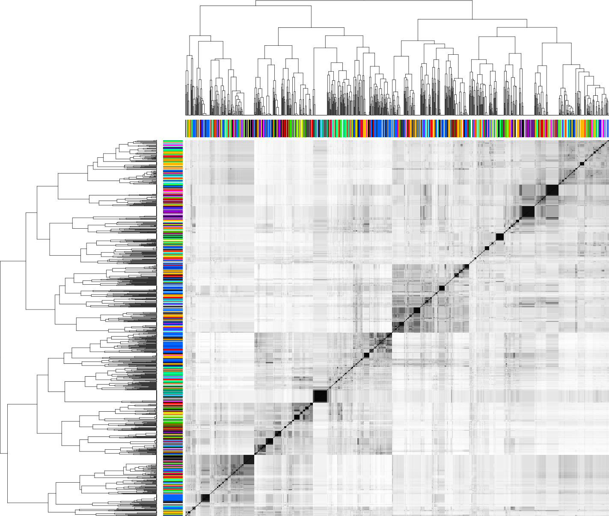

Brain-1.4.1
A library for the OWL2 EL profile
Samuel Croset, John Overington, Dietrich Rebholz-Schuhmann
May 26, 2013 - OWLED 2013
Samuel Croset, John Overington, Dietrich Rebholz-Schuhmann
May 26, 2013 - OWLED 2013

GO_0001820
or P04637)"drug that positively-perturbs some Pyridoxal kinase")Natural language:
A nucleus is part of some cells.
Description logics:
Nucleus ⊑ ∃part-of.Cell
OBO (without identifiers):
[Term]
id: Nucleus
relationship: part_of Cell
OWL (Manchester syntax):
Nucleus subClassOf part-of some Cell
//Create a manager and define the base IRI for the ontology
// and prepare a factory
OWLOntologyManager manager = OWLManager.createOWLOntologyManager();
String base = "http://www.example.org/";
OWLOntology ontology = manager.createOntology(IRI.create(base + "ontology.owl"));
OWLDataFactory factory = manager.getOWLDataFactory();
//Declare the classes
OWLClass nucleus = factory.getOWLClass(IRI.create(base + "Nucleus"));
OWLClass cell = factory.getOWLClass(IRI.create(base + "Cell"));
OWLObjectProperty partOf =
factory.getOWLObjectProperty(IRI.create(base + "part-of"));
OWLClassExpression partOfSomeCell = factory.getOWLObjectSomeValuesFrom(partOf,cell);
//Add the axiom to the ontology
OWLSubClassOfAxiom axiom = factory.getOWLSubClassOfAxiom(nucleus, partOfSomeCell);
AddAxiom addAxiom = new AddAxiom(ontology, axiom);
manager.applyChange(addAxiom);
//Save
manager.saveOntology(ontology, IRI.create("file:/home/samuel/Desktop/ontology.owl"));
Brain brain = new Brain();
brain.addClass("Nucleus");
brain.addClass("Cell");
brain.addObjectProperty("part-of");
brain.subClassOf("Nucleus", "part-of some Cell");
brain.save("/home/samuel/Desktop/ontology.owl");
OWLOntologyManager manager = OWLManager.createOWLOntologyManager();
File file = new File("/home/samuel/Desktop/ontology.owl");
OWLOntology ontology = manager.loadOntologyFromOntologyDocument(file);
String base = "http://www.example.org/";
OWLDataFactory factory = manager.getOWLDataFactory();
//Prepare the anonymous query "part-of some Cell"
OWLClass cell = factory.getOWLClass(IRI.create(base + "Cell"));
OWLObjectProperty partOf =
factory.getOWLObjectProperty(IRI.create(base + "part-of"));
OWLClassExpression partOfSomeCell = factory.getOWLObjectSomeValuesFrom(partOf,cell);
OWLClass temporary = factory.getOWLClass(IRI.create("temp"));
OWLEquivalentClassesAxiom axiom =
factory.getOWLEquivalentClassesAxiom(temporary, partOfSomeCell);
AddAxiom addAxiom = new AddAxiom(ontology, axiom);
manager.applyChange(addAxiom);
//Creates the reasoner
OWLReasonerFactory reasonerFactory = new ElkReasonerFactory();
OWLReasoner reasoner = reasonerFactory.createReasoner(ontology);
reasoner.precomputeInferences(InferenceType.CLASS_HIERARCHY);
//Get the descendant classes of "part-of some Cell"
Set<OWLClass> subClasses = reasoner.getSubClasses(temporary, false).getFlattened();
for (OWLClass subClass : subClasses) {
System.out.println("subClass: " + subClass);
}
reasoner.dispose();
Brain brain = new Brain();
brain.learn("/home/samuel/Desktop/ontology.owl");
List<String> subClasses =
brain.getSubClasses("part-of some Cell", false);
for (String subClass : subClasses) {
System.out.println("subClass: " + subClass);
}
brain.sleep();
@Test
public void testAxiom() throws ClassExpressionException {
//My knowledge base should be able to answer this
assertEquals("Nucleus",
brain.getSubClasses("part-of some Cell", false).get(0));
}
float sim = brain.getJaccardSimilarityIndex("Nucleus", "Cell");
//Controller method routed from GET /{name}
//Example: http://www.example.org/John
public static void showUser(String name) {
//SQL query over the Model (relational database)
User user = User.find(
"SELECT DISTINCT user FROM User WHERE user.name=?", name).first();
render(user);
}
<!-- View (HTML template) rendered on browser -->
<h1>Hello ${user.name}</h1>
//Controller method routed from GET /{name}
//Example: http://www.example.org/Cell
public static void showOwlClass(String name) {
//OWL query over ontology
OWLClass owlClass = brain.getOWLClass(name);
List<String> parts =
brain.getSubClasses("part-of some " + name, false);
render(name, parts);
}
<!-- View (HTML template) -->
<h1>OWL Class: ${name}</h1>
#{list items:parts, as:'part' }
<div>subClass: ${part}</div>
#{/list}